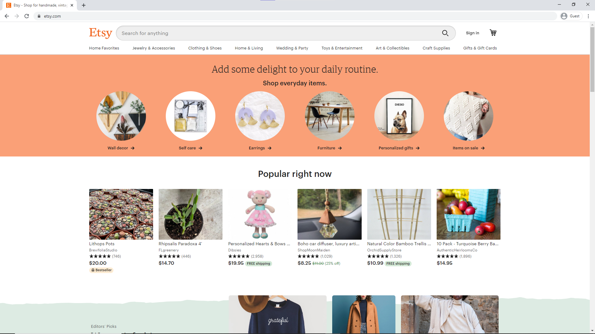
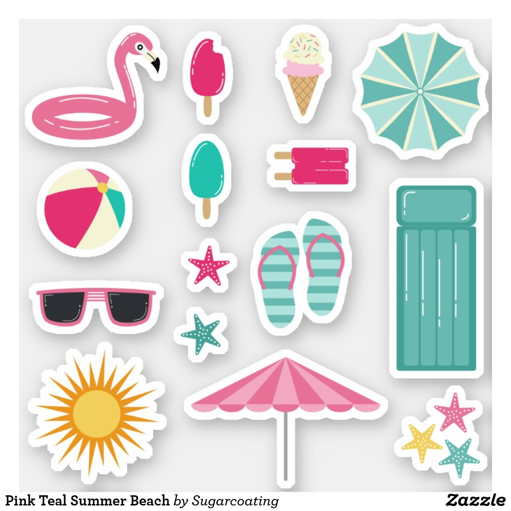

Tips From an Etsy Shop Owner- Selling Digital Artwork
by Nina Luo
Click here to visit my Etsy Shop!
As a first-generation immigrant who has just received her crisp new US passport, I still have a lot to learn about being American. I adore the American idea of self-started businesses or entrepreneurship. However, numbers from the U.S Bureau of Labor Statistics show a reality that is overwhelmingly unfavorable for start-ups, with 45% of new businesses failing within the first five years.
The Beginning: Understanding Etsy

I have wanted, so badly and for so long, to start my own digital art shop. So I did some research and found that Etsy.com was a viable intermediary for artists of all mediums. People sold everything from hand-made bracelets to digital prints to profile picture commissions. Additionally, the art community on Etsy is one of the nicest corners on the internet that I have encountered. Sellers tend to always deliver satisfaction, and buyers almost always leave nice comments with five-star reviews. Nice customers and a healthy balance of supply and demand were all that I could hope for in a market. Still, I needed to figure out the finances and many other logistics before I could move forward with my plan.
First, Etsy requires all sellers to pay a flat fee of $0.20 to put up each product listing. I have two listings so far: profile picture commission and lucky cat-themed iOS 14 icons. Next, Etsy takes a commission fee, or transaction fee, of 5% for every sale you make. You can price your item however you would like, but be aware of the market price as to not undervalue or overvalue your product. Undervaluing your product may be profitable in the short term, but your competitors may lower their prices to stay competitive. In short, both of you will lose money in the long term and the overall market value of the types of products you sell will drop. And if you dramatically overvalue your product without a strong brand to justify the price, you might not get any buyers at all.
Building a Brand
A strong brand makes your product listing stand out from your competitors. Indicators of a strong brand can include but is not limited to the following qualities: trustworthiness, aesthetic, and well-put-together. Choosing a theme and sticking with it is also a great way of branding. Let’s say you chose to sell a collection of beach-themed stickers, you must not only make the subjects of your stickers beach-themed items but must also color the stickers all in a beach-themed color palette. Additionally, branding extends into countless minor decisions such as word choice for product and shop name, font, photoshop work for listing pictures, listing description, customer service, etc. The combination of these individual qualities is what communicates the brand to buyers, so make sure you focus always on the big picture!

Link to Image
Advancing Your Business: Passive Income
This is perhaps the most important tip so far—create a passive income. Don’t rely on custom commissions as your only source of income! Custom art commissions can take up a lot of your time, and this includes time spent creating the commission, communicating with buyers, and revising the draft if need be. Instead, artists may consider creating a digital print for immediate download after purchase. Buyers looking for things like planners, stickers, wall art, iOS 14 icons, and etc can buy and receive your product without your involvement. Simply create a digital file, put it up as a listing, and it will rack up income in the background.
Potential Pitfalls
One of the biggest mistakes I made as a beginner was relying on Etsy ads too early. Two weeks into my Etsy journey, I would only get an average of 3 views a day. This was discouraging to see after I had spent a long time creating sample images and drafting the product description. So, I ventured into the ‘Marketing’ tab in my Etsy shop manager and discovered Etsy ads. Etsy ads allow you to set a daily advertisement budget anywhere from 1 dollar to 25 dollars. Essentially, sellers would be bidding on ad placement as well as how many viewers will see it. You will be charged a portion of your budget each time a buyer clicks into your advertisement. For a brand new shop, it is more than likely that you won’t get many clicks, causing only a small part of your budget to be used each day. Though this method of advertising sounds enticing to beginners, the cost of Etsy ads could end up giving you not customers, but a negative balance instead.
I have only started my Etsy business last Christmas. These are a few pieces of advice that I can offer, but I still have a lot of room to improve!